| 日付 | 2022年2月27日（日） |
|---|---|
| 山域 | 安蘇山塊 |
| メンバー | 家族（妻、長女・10歳、長男・8歳） |
| 山行形態 | 子連れ日帰り |
| アクセス | 車 |
| ルート (Map) | 御嶽山神社 (8:50) - (9:46) お岩戸 (9:57) - (10:28) 奥の院 - (11:41) 三峰山 (12:05) - (12:40) 浅間神社鍾乳洞 - (13:18) 御嶽山神社 |
二月下旬はフクジュソウやセツブンソウの咲く季節。
麓の公園でセツブンソウがたくさん咲くという、栃木県の三峰山に行ってみることにする
登山口の近くにある四季の森星野を訪れる。
まだ朝早いため人影はまばらだ。
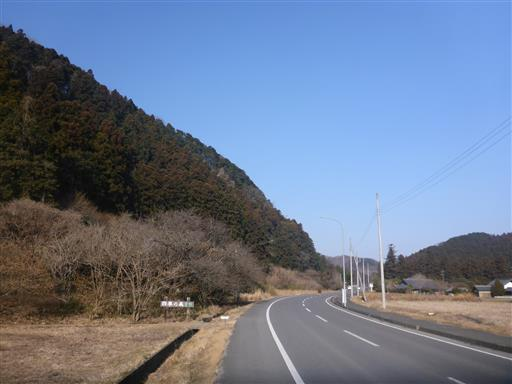
お目当てのセツブンソウ。
たくさん咲いているが、小さくて色が薄いため、とにかく目立たない。
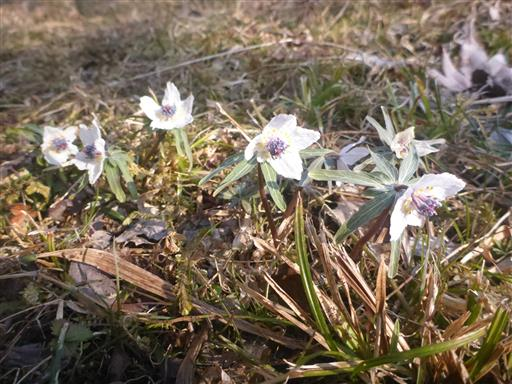
ロウバイも咲いている。
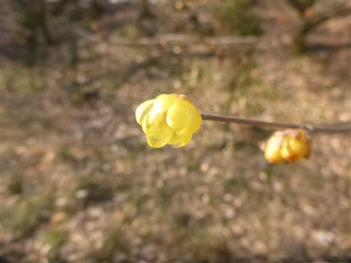
15分程度ぐるっと一周観光したら、車に戻って登山口に移動する。
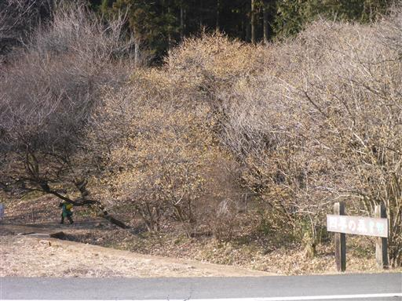
三峰山の登山口に到着。御嶽山神社の駐車場に駐車。標高145m。
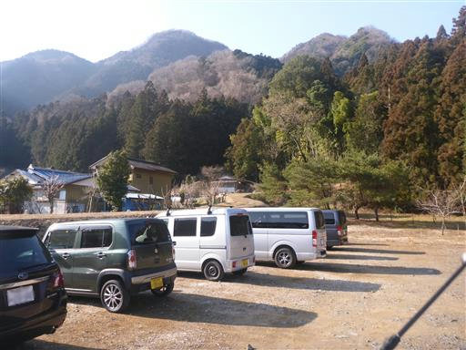
御嶽山神社。立派な神社だ。
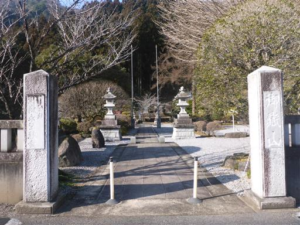
これから登る三峰山の全体像。
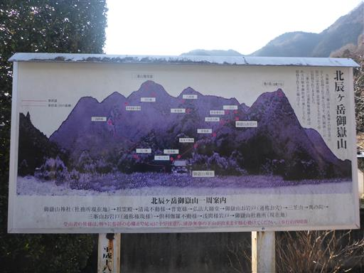
池が凍り付いている。それほど厚くない氷だ。
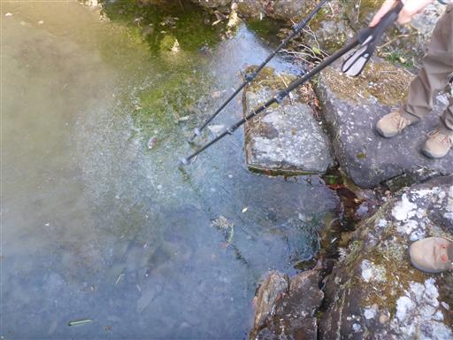
本堂。
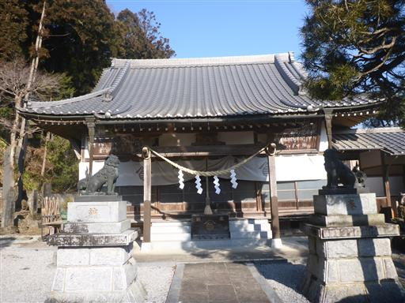
神社の境内にフクジュソウがたくさん咲いている。
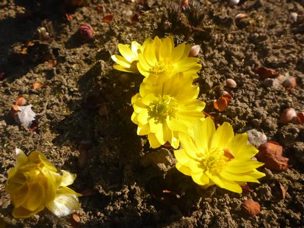
神社の中の階段を登る。
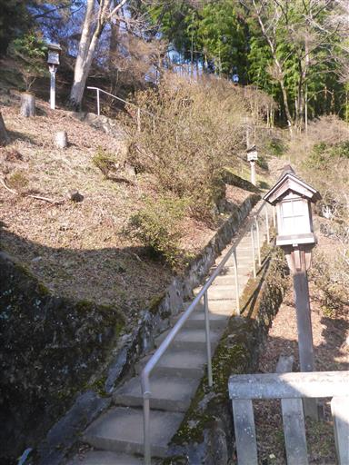
階段を登った先にも社が建っている。
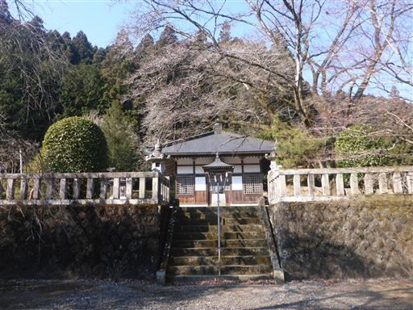
日の門、出世の門、反対側に月の門、忍耐の門と書かれている。
とりあえず4回潜っておく。
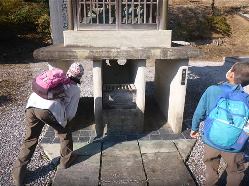
ここから本格的な登山道になる。
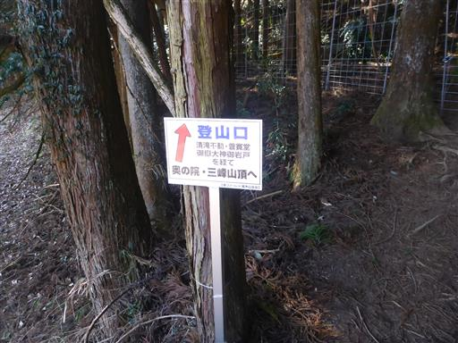
まずは動物除けの柵を越える。柵の扉はカラビナで留められている。
針金やロープより使いやすい。
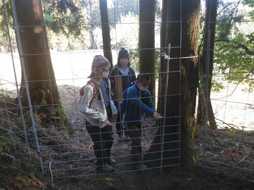
植林地帯の中を登って行く。
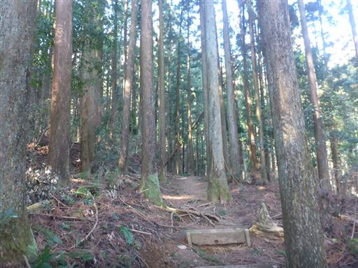
しばらく登ると建物が現れる。
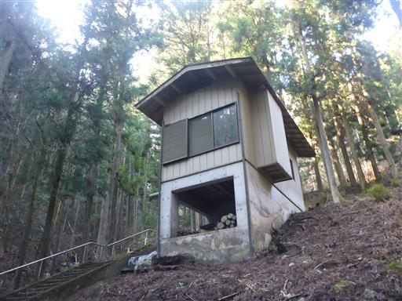
人工的な滝と、下に降りる階段がある。恐らくここは滝行の場所だ。

少し登った先にも社がある。
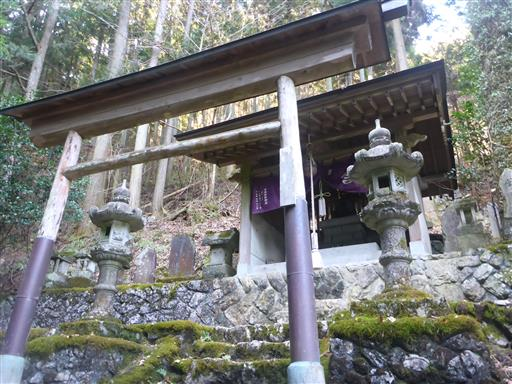
この辺りから登山道は急斜面になり険しくなってくる。
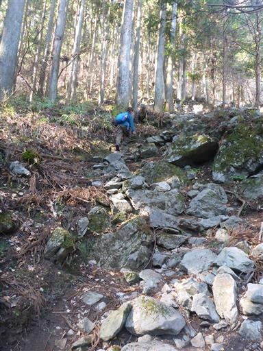
道端には石祠が並んでいる。まさに信仰の山だ。
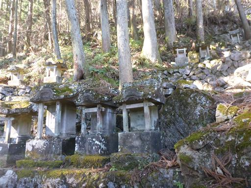
御嶽山お岩戸に到着。
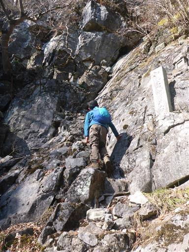
鎖場を登る。登った先の左に小さな岩穴がある。
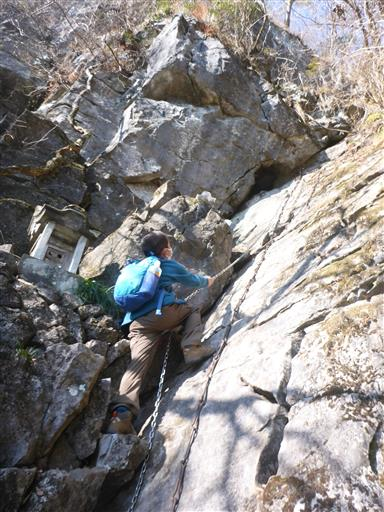
穴の中を覗く。
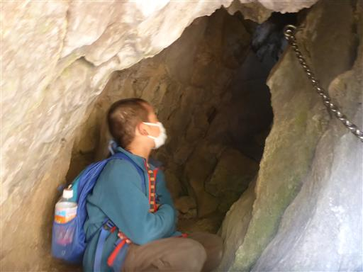
穴の中は思った以上に深い。
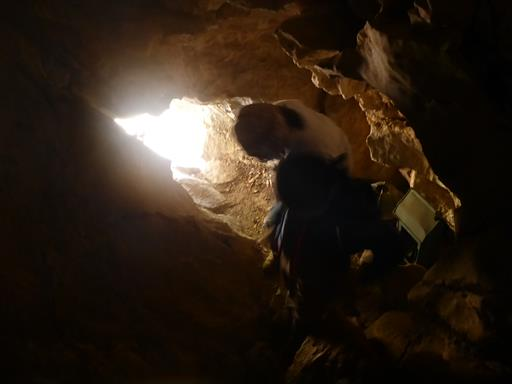
穴の中から外側を見る。
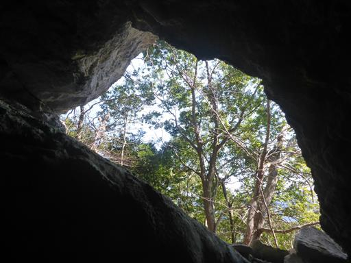
穴の奥に石祠がある。その奥に小さな穴があり
光が差し込んでいるが、ここから外には出られない。
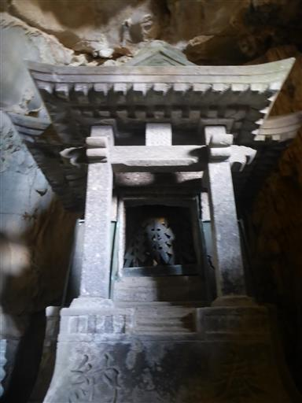
穴から見た鎖場。ここから下りるのは狭くて少々難しい。
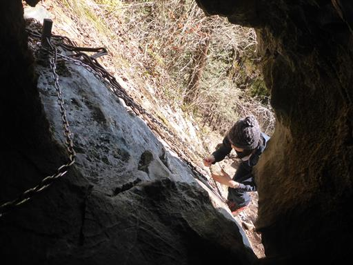
お岩戸を後にする。この辺りはトラバース道が続き、滑落に注意が必要だ。
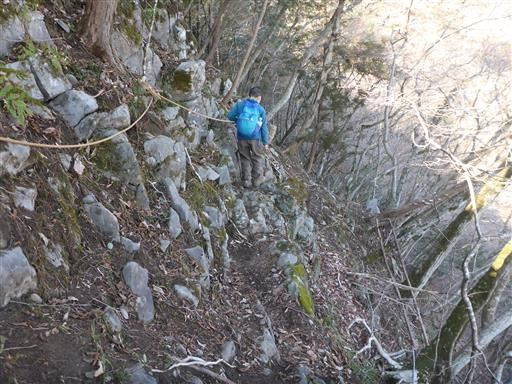
遠く日光男体山と女峰山が見える。
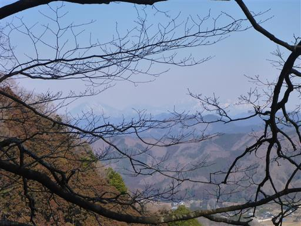
稜線に到達。ここには雪が残っている。
ここから奥の院を往復する。
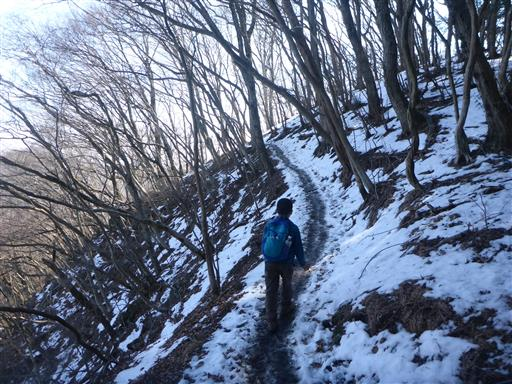
雪と泥で滑りやすい道を越えると、奥の院に到着する。
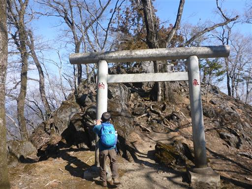
奥の院には三神が祀られている。
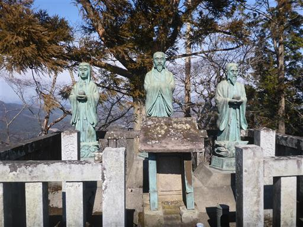
来た道を引き返し、三山参道に進む。
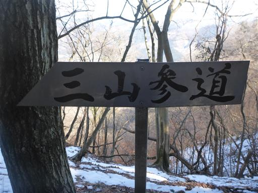
爽快な稜線が続くかと思ったら、周囲はほとんど植林地帯だ。
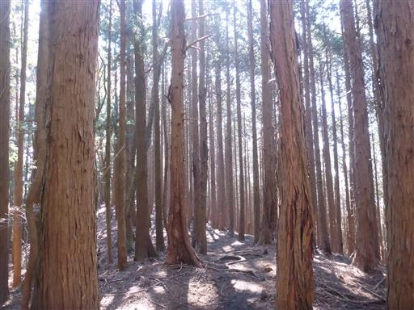
右手に見えるのは石灰石採掘場。
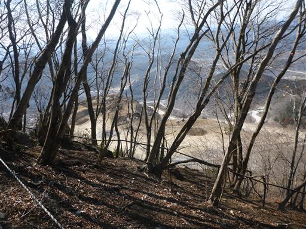
確かに周囲には白い岩がたくさん見られる。この山は石灰岩でできているようだ。
信仰の山ではあるが、武甲山と同じくこの山は削られ続ける運命だ。
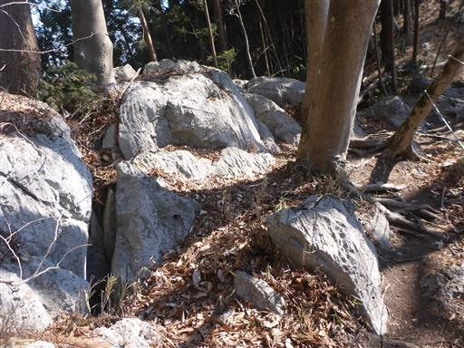
三峰山山頂に到着する。標高605m。

山頂はフェンスと立入禁止のロープがあり、ものすごく冴えない山頂だ。
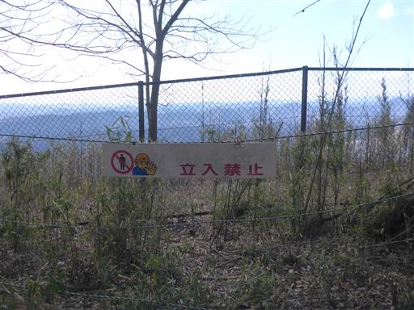
樹林に囲まれ展望はほとんどない山頂で、見える景色と言えば、石灰石採掘場くらい。
登山道にも昼食をとるのに適した場所は無かったので、ここで昼食をとる。
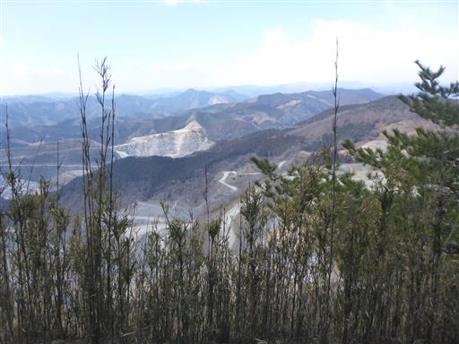
昼食をとったら下山。少し元の道を引き返したら、登りとは別の道を下る。
この道も結構な急斜面だ。
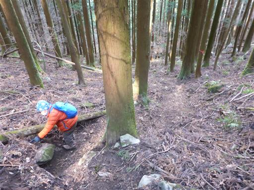
右手に梯子が見えたので行ってみる。
梯子に至る道はとてつもない急斜面。
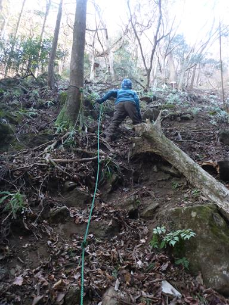
鎖付きの梯子を登る。
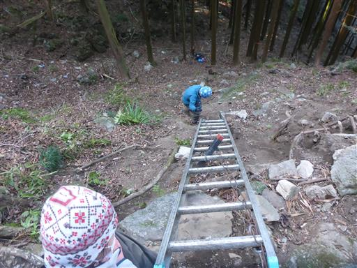
恐ろしいことに鎖は破断している。
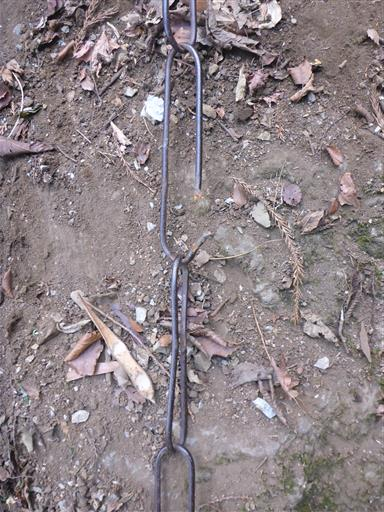
辿り着いた先は浅間神社鍾乳洞。
扉があり錠が取り付けられていて、中に入れない。
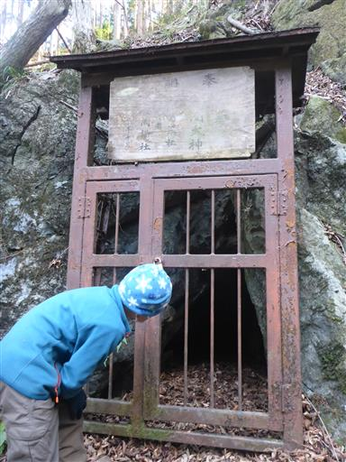
中を覗いてみる。家に帰って軽く調べてみたが、
この洞窟に入った記録は見つからなかった。
かなり昔から施錠されているようだ。
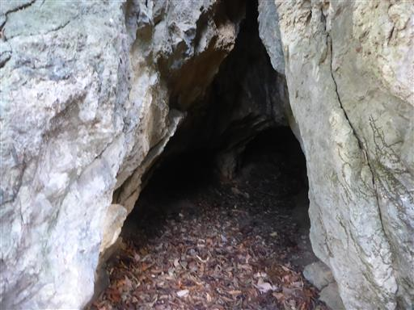
木の幹の表面がはがれている。巨大な落石が直撃でもしたのだろうか？
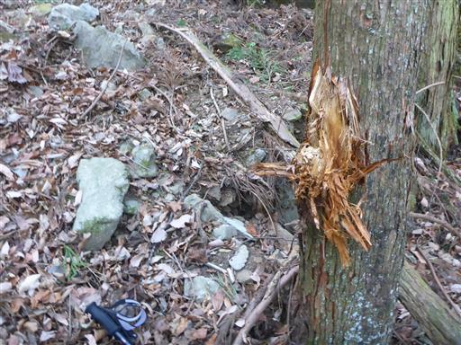
この辺りは倒木だらけだ。
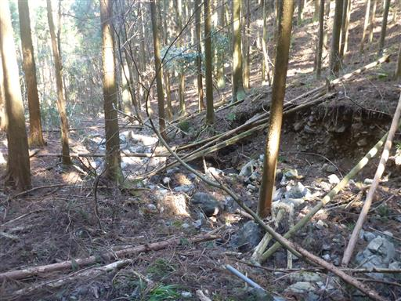
無事下山。下山地点がちょうど駐車場だ。
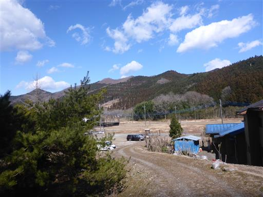
足元にオオイヌノフグリを発見。春の到来だ。
三峰山はお岩戸の鎖場と穴が面白かったが、
全体的には植林地帯ばかりで展望がほとんどなく、面白味に欠ける登山道だった。
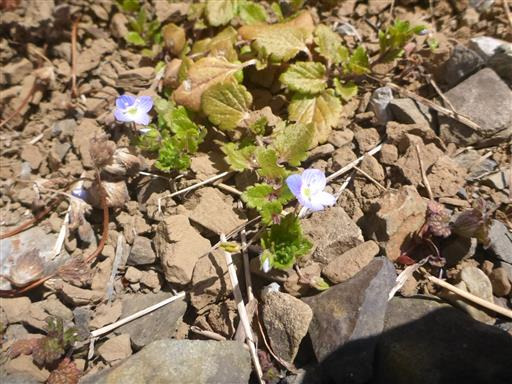